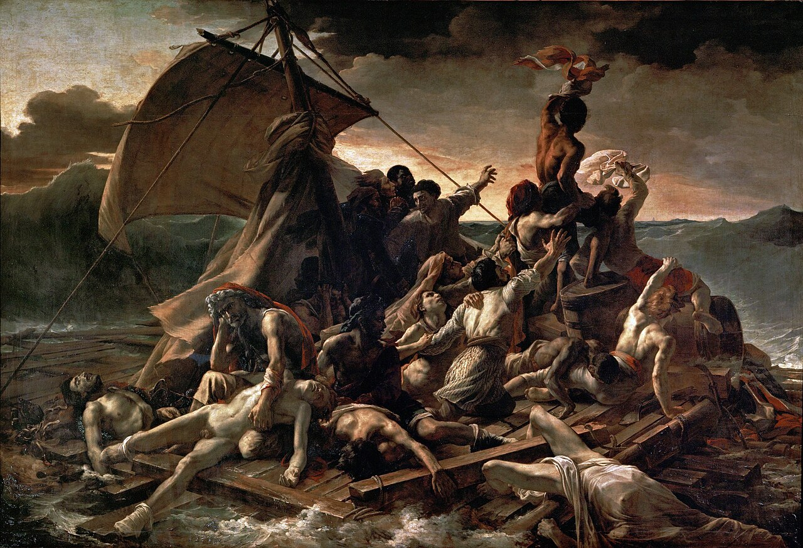
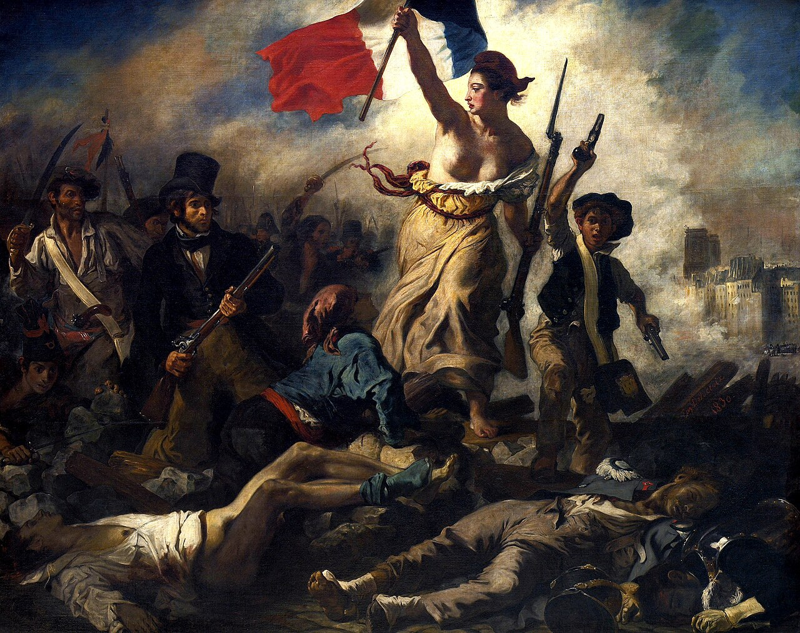
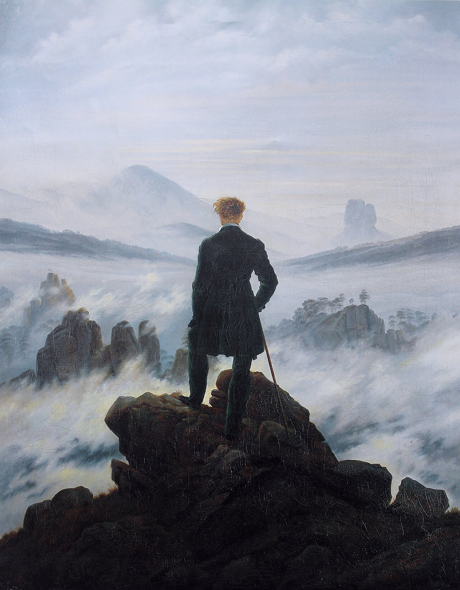
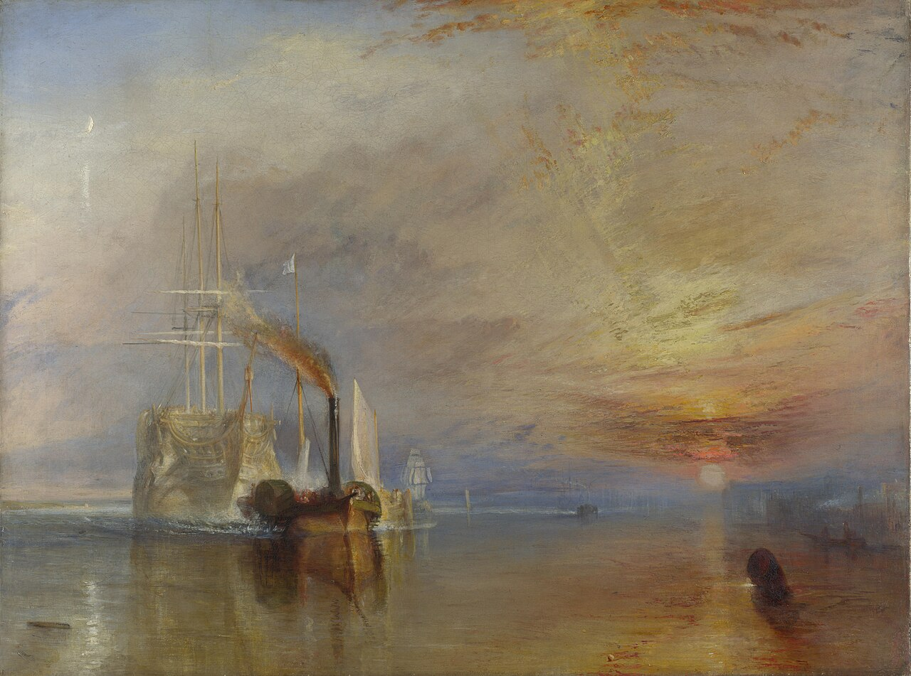
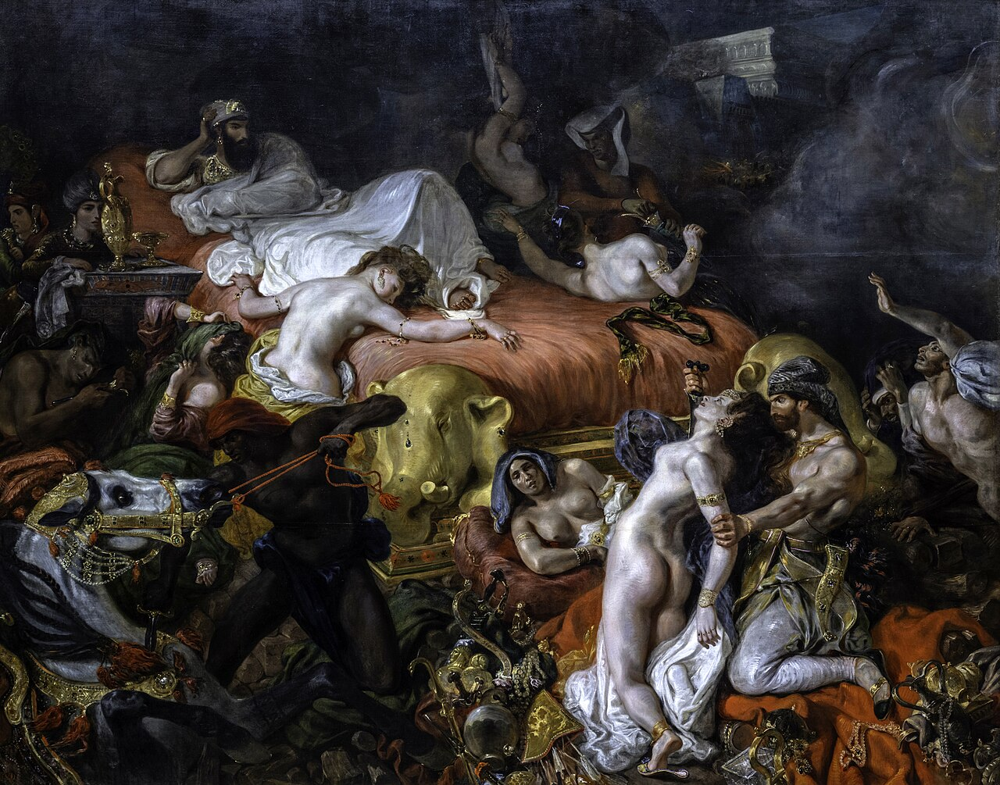
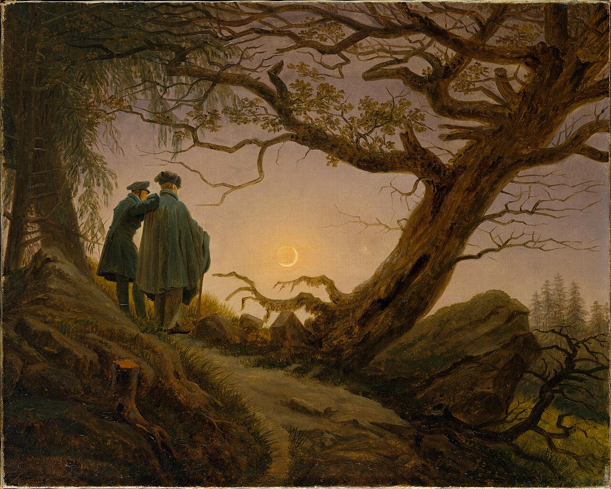
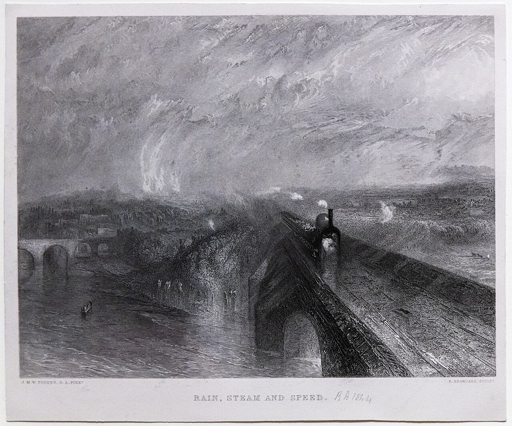

Meesterwerk: Het Vlot van de Medusa
Théodore Géricault, 1819

⚜️ UITGEBREIDE STIJLFIGUREN
🌊 EMOTIE & DRAMA
Gevoel boven rede: De Romantiek reageert tegen het koele Neoclassicisme. Emotie is waardevol, zelfs (vooral) als het pijnlijk is.
Sublime: Het overweldigende, het angstaanjagende mooie. Natuur die de mens verplettert.
🏔️ NATUUR & WILDERNIS
Natuur als spiegel: Stormen, bergen, woeste zeeën - de natuur weerspiegelt onze emoties.
Wildernis: Niet de getemde tuin, maar de ongerepte wildernis. De natuur die groter is dan de mens.
👤 HET INDIVIDU
De eenzame held: De kunstenaar als genie, de denker als-outsider. Het individu tegen de massa.
Exotisme: Verre culturen, het verleden, het obscure. Alles om te ontsnappen aan de saaie werkelijkheid.
🎨 LOSSE PENSEELVOERING
Schilderachtig: Losse, zichtbare penseelstreken. De emotie zit in het gebaar.
Kleur: Intense, soms donkere kleuren. Contrasten om emotie te versterken.
📚 TIJDSGEEST CONTEXT (1800-1850)
🌍 POLITIEK PERSPECTIEF
- De Napoleontische Oorlogen (1803-1815) verwoesten Europa
- Het Congres van Wenen (1815) herstelt conservatieve monarchieën
- De Julirevolutie (1830) en Februarirevolutie (1848) tonen onrust
- Nationalisme groeit (Griekse onafhankelijkheid 1830, Belgische 1830, Duitse eenwording 1871)
- Kolonialisme breidt uit (Brits Imperium, Frankrijk in Afrika)
📖 LITERAIR PERSPECTIEF
- Romantische poëzie (Wordsworth, Coleridge, Hugo, Heine) viert natuur en emotie
- De novelle en het grote romantische boek (Hugo's "Les Misérables", 1862) ontstaan
- De Gotische roman (Shelley, Poe) onderzoekt het gruwelijke
- Hoffmann's fantastische verhalen
- De biografie als genre wordt populair
🧠 PSYCHOLOGISCH PERSPECTIEF
- Het "Weltschmerz" (wereldpijn) wordt mode
- De mens is niet rationeel maar gedreven door passies
- Het genie lijdt onder de wereld (Byron)
- Dromen en het onderbewuste (voor Freud) worden interessant
- Melancholie als esthetische houding
- De "egotistical sublime" (Keats) - het individu als universum
⚙️ HISTORISCH PERSPECTIEF
- De Industriële Revolutie versnelt: stoomtreinen (Stephenson 1829), telegraaf (Morse 1837), fotografie (Daguerre 1839)
- Steden exploderen (Londen van 1 naar 6 miljoen)
- De "Hungry Forties" (hongerige jaren veertig) brengen sociale ellende
- De aarde blijkt miljoenen jaren oud (Lyell)
- De dodo sterft uit, dinosauriërs worden ontdekt
🎭 FILOSOFISCH PERSPECTIEF
- De Duitse Idealisme (Kant, Fichte, Schelling, Hegel) maakt het subject centraal
- Schelling's natuurfilosofie: natuur is levend, organisch
- Hegel's dialectiek: geschiedenis als strijd van tegenstellingen
- Schopenhauer's pessimisme: de wil als bron van lijden
- Kierkegaard's existentiële angst
- De tegenstelling tussen klassiek (orde) en romantisch (chaos)
🎨 MEESTERWERKEN - GEDETAILLEERDE ANALYSE
1. "Het Vlot van de Medusa" (1819) — Théodore Géricault
Louvre, Parijs · 491 × 716 cm · Olieverf op doek
Achtergrond: Gebaseerd op een werkelijke ramp: het fregat Medusa liep vast voor de kust van Senegal. 147 mensen werden op een vlot achtergelaten, slechts 15 overleefden. Géricault onderzocht maandenlang het verhaal.
🔍 STIJLANALYSE
Compositie: De piramide van wanhoop. Onder: dode en stervende lichamen. Midden: overlevenden die worstelen. Boven: een figuur die een schip ziet - hoop op redding.
Realisme: Géricault interviewde overlevenden, bezocht het wrak, liet het vlot nabouwen. De lijken zijn geschilderd naar sectie-materiaal. Dit is Romantiek gebaseerd op feiten.
Licht: Het licht komt van rechts - de redding, de hoop. Maar het is een vale, grijze gloed. De zon breekt niet door.
Politiek: De kapitein was een incompetente edelman die zijn post kreeg door connecties. Géricault's schilderij is een aanklacht tegen het restauratie-regime.
2. "De Vrijheid leidt het Volk" (1830) — Eugène Delacroix
Louvre, Parijs · 260 × 325 cm · Olieverf op doek

Achtergrond: De Julirevolutie van 1830 in Parijs. Delacroix schilderde dit vlak na de gebeurtenissen. Het wordt het symbool van revolutie en vrijheid - later gebruikt op de Franse 100-frankbiljet.
🔍 STIJLANALYSE
Liberty: Een allegorische vrouw, half naakt, met de driekleur. Ze is geen specifieke persoon maar het idee van vrijheid zelf. Ze kijkt naar de kijker, niet naar de strijd.
De menigte: Een arbeider (met baret), een student (met hoed), een jongen (met sabel). Alle klassen vechten samen. Dit is de natie, niet alleen de elite.
Kleur: De driekleur (blauw, wit, rood) domineert. Het is helder, heldhaftig, optimistisch. Maar er is ook veel rook, grauw, chaos.
Romantiek: Dit is geen documentaire maar een visionair werk. Delacroix maakt van een specifieke revolutie een universeel symbool van de strijd voor vrijheid.
3. "De Wanderer boven de Zee van Mist" (1818) — Caspar David Friedrich
Kunsthalle Hamburg · 95 × 75 cm · Olieverf op doek

Achtergrond: Het meest bekende werk van Friedrich. Een man staat op een rots, rug naar ons toegekeerd, starend over een zee van mist. Het is het symbool van Romantische eenzaamheid en het sublime.
🔍 STIJLANALYSE
Rückenfigur: De figuur kijkt van ons weg, naar het landschap. Wij kijken met hem mee. Het landschap wordt een projectie van zijn (en onze) gedachten.
Het sublime: De natuur is overweldigend, ongrijpbaar, gevaarlijk. De mist verbergt de diepte - we weten niet hoe hoog de rots is, hoe diep de afgrond.
Eenzaamheid: De figuur is alleen. Dit is geen sociaal tafereel maar een innerlijke ervaring. De Romantiek viert de eenzame, denkende mens.
Kleur: Grijs, blauw, wit - de kleuren van mist en hemel. Alleen de groene jas van de figuur geeft kleur. De mens is een vlek in de natuur.
4. "De Derde Mei 1808" (1814) — Francisco Goya
Prado Museum, Madrid · 268 × 347 cm · Olieverf op doek

Achtergrond: De executie van Spaanse burgers door Franse soldaten na een opstand in Madrid. Goya's meest politieke werk - een aanklacht tegen oorlog en onderdrukking.
🔍 STIJLANALYSE
Het slachtoffer: De man met uitgestrekte armen, de handen vol stigmata (wonden als van Christus). Hij is een martelaar, niet een soldaat. Zijn gezicht toont angst én waardigheid.
De beulen: Anoniem, mechanisch, hun gezichten niet zichtbaar. Ze zijn een machine van dood, geen individuen. De lantaarn maakt hen tot schaduwfiguren.
Licht: Het enige licht valt op het slachtoffer - als een spotlight, als een heilig licht. De rest is donker, alsof we in een nachtmerrie zijn.
Romantiek: Dit is geen heroïsche oorlog (zoals David schildert) maar gruwelijke werkelijkheid. Goya toont wat oorlog echt is: willekeurige, zinloze dood.
5. "Het Zee van Ijs" (1823-1824) — Caspar David Friedrich
Hamburger Kunsthalle · 97 × 127 cm · Olieverf op doek

Achtergrond: Een schip wordt verpletterd door ijsbergen in het Arctische gebied. Gebaseerd op de expeditie van William Parry. Friedrich's meest dramatische werk - de natuur als vernietigende kracht.
🔍 STIJLANALYSE
Het sublime: De ijsmassa's torenen op, splinteren, verpletteren alles. De menselijke boot is minuscuul. Dit is de natuur die de mens niet tolereert.
Compositie: De ijsbergen vormen een piramide naar het midden - waar het schip wordt vernietigd. Het oog wordt naar het drama geleid.
Kleur: Blauw, wit, grijs - de koude kleuren van de dood. Alleen een vleugje bruin (het schip) en rood (de vlag) geven menselijke warmte.
Symboliek: De schipbreuk van de menselijke ambities. De Romantiek erkent dat de natuur groter, ouder, krachtiger is dan wij.
6. "De Vechtende Temeraire" (1839) — J.M.W. Turner
National Gallery, Londen · 91 × 122 cm · Olieverf op doek

Achtergrond: Het oorlogsschip Temeraire (held van de Slag bij Trafalgar) wordt gesleept naar de sloop door een stoomboot. Een elegie voor het zeil-tijdperk, geschilderd door Turner als lofzang op het verleden.
🔍 STIJLANALYSE
Licht: De zonsondergang baadt alles in goud. Het is een begrafenis, maar een prachtige. Het oude schip gloeit, het nieuwe (de stoomboot) is zwart en roetig.
Atmosfeer: Turner schildert lucht en licht, niet objecten. De schepen zijn bijna abstract - vage vormen in de gloed. Dit is voorloper van het Impressionisme.
Contrast: Het majestueuze, witte zeilschip versus de kleine, zwarte stoomboot. Schoonheid versus efficiëntie. Het verleden versus de toekomst.
Melancholie: Dit is geen triomf maar afscheid. Turner rouwt om de wereld die verdwijnt - de wereld van wind en zeilen, van avontuur en romantiek.
7. "De Dood van Sardanapalus" (1827) — Eugène Delacroix
Louvre, Parijs · 392 × 496 cm · Olieverf op doek

Achtergrond: De Assyrische koning Sardanapalus beveelt al zijn bezittingen (inclusief paarden en concubines) gedood te worden voordat hij zelf sterft. Geïnspireerd door Byron's gedicht. Exotisme, geweld, sensualiteit.
🔍 STIJLANALYSE
Chaos: Er is geen centraal focuspunt. Alles beweegt, draait, valt. Diagonale lijnen creëren paniek. Dit is het tegenovergestelde van klassieke orde.
Kleur: Robijnrood, goud, smaragdgroen - de kleuren van Oosterse weelde. Delacroix gebruikt complementaire kleuren voor maximale spanning.
Exotisme: Het Oosten als fantasie van decadentie. Dit is geen realistisch Assyrië maar een 19e-eeuwse droom van zonde en sensualiteit.
Sardanapalus: Hij ligt op zijn bed, kalm, terwijl om hem heen de hel losbreekt. Hij is de auteur van het geweld, maar ook de toeschouwer. Macht en decadentie in één.
8. "Twee Mannen beschouwen de Maan" (1819-1820) — Caspar David Friedrich
National Gallery of Art, Washington · 35 × 44 cm · Olieverf op doek

Achtergrond: Twee mannen (vaak geïnterpreteerd als Friedrich zelf en een vriend) staan op een heuvel en kijken naar de maan. Een intiem, contemplatief werk - het tegenovergestelde van het sublime.
🔍 STIJLANALYSE
Gezamenlijkheid: In tegenstelling tot "De Wanderer" zijn hier twee figuren. Romantiek hoeft niet eenzaam te zijn - het kan ook gedeeld worden.
De maan: De maan is het licht in de duisternis, de troost in de nacht. Voor Romantici was de maan het symbool van dromen, intuïtie, het vrouwelijke.
Compositie: De bomen vormen een natuurlijke "deur" naar de hemel. De figuren zijn klein, maar hun aandacht is groot. Het innerlijke telt meer dan het uiterlijke.
Intimiteit: Dit is geen overweldigend landschap maar een vriendelijk, bijna huiselijk tafereel. Romantiek kan ook zacht zijn.
9. "Saturnus verslindt zijn Zoon" (1819-1823) — Francisco Goya
Prado Museum, Madrid · 143 × 81 cm · Olieverf op muur (overgebracht naar doek)

Achtergrond: Oorspronkelijk geschilderd op de muur van Goya's huis ("De Zwarte Schilderijen"). Saturnus (Kronos) eet zijn kinderen op uit angst dat ze hem zullen verdrijven. Het meest angstaanjagende werk van Goya.
🔍 STIJLANALYSE
Geweld: Het is gruwelijk - bloed, ingewanden, een half opgegeten lichaam. Maar het is ook abstract, bijna komisch in zijn afschuwelijkheid. Goya maakt van horror kunst.
De blik: Saturnus' ogen zijn wijd open, gestoord, waanzinnig. Hij is niet alleen wreed maar ook gek. De macht maakt hem dwaas.
Donkere periode: Dit is laat-Goya, na zijn doofheid, na de oorlog. De wereld is donker, de mens is beest. Goya's pessimisme op zijn puurst.
Mythe als waarheid: Saturnus is mythologie, maar het beeld voelt echt. Ouders die kinderen vernietigen uit angst - dit is universeel.
10. "Regen, Stoom en Snelheid" (1844) — J.M.W. Turner
National Gallery, Londen · 91 × 122 cm · Olieverf op doek

Achtergrond: Een trein raast door de regen over een brug. Turner schilderde dit nadat hij een treinreis had gemaakt. Het is een lofzang op de moderne technologie - maar ook een visioen van snelheid en beweging.
🔍 STIJLANALYSE
Abstractie: Je kunt de trein nauwelijks zien. Het is een vlek van zwart, een wolk van stoom, een streep van regen. Turner schildert de ERVARING van snelheid, niet de trein.
Licht: De regen en stoom filteren het licht. Alles is diffuus, goudkleurig, dromerig. De moderne wereld wordt romantisch.
Contrast: Een haas in de linkerhoek (natuur) versus de trein (technologie). Wie wint? De trein is een dreigende vlek, de haas is een detail. Maar toch is er geen oordeel - Turner viert beide.
Voorloper: Dit is bijna abstract expressionisme, geschilderd in 1844. Turner was honderd jaar vooruit op zijn tijd.
📚 CONCLUSIE: HET GEVOEL TRIOMPHEERT
De Romantiek leert ons:
- Dat emotie waardevol is: Gevoelens zijn niet zwak maar krachtig
- Dat natuur groter is dan wij: Het sublime overweldigt de mens
- Dat het individu telt: De eenzame held, de denker, de kunstenaar
- Dat kunst politiek kan zijn: Géricault en Goya als aanklagers
- Dat schoonheid in pijn zit: Tragedie als esthetische ervaring
De Romantiek geeft stem aan het hart.